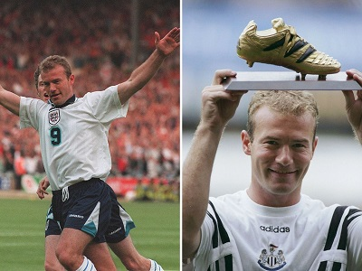

The Best 13 Motivating Quotes from Alan Shearer
Alan Shearer is an eminent English retired footballer. In 1994, he earned the feat of Football Writers Association Player of the Year. He played in the England national team as a striker, and Newcastle United, Southampton, and Blackburn Rovers in the English League Football. He was third in the ‘FIFA World Player of the Year’ awards in 1996. We have compiled some empowering and inspiring words shared by Alan Shearer both on-field and off-field. Go through the quotes and sayings by Alan Shearer which has been excerpted from his works, tweets, interviews, thoughts, public utterances, and life.
"Regrets? None at all."
"Some players are criticised for having no loyalty. Well, I wanted to go back home and play for the club I supported. I don't think that's a crime."
"Somewhere along the line you've got to do your apprenticeship. But I'd want half a chance of being successful at it."
"The fans have what they want. They want entertainment, they want passion and they want commitment."
"I don't know what I believe in. I try not to think about it. I don't want to think about it."
"Whenever I have any spare time I have a game of golf."
"I didn't watch cartoons, I was too busy playing football."
"I don't watch a lot of TV, to be honest. With three kids I have my hands full."
"I have had interviews and got close to taking a managerial job. I would consider going back into football."
"Management interests me at some stage in my life, I have always said that. When that will be I really couldn't tell you."
"I always practise penalties, but what people don't understand is that you can never recreate that pressure situation that you're under."
"I hope I never have to face that feeling of missing and sending my country or team out of a competition."
"There are not many times when I get nervous, but I do a little bit with penalties."